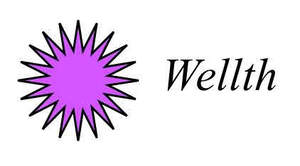
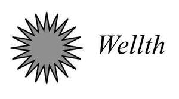
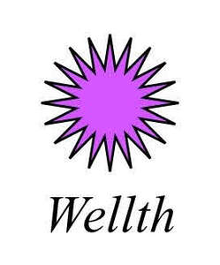
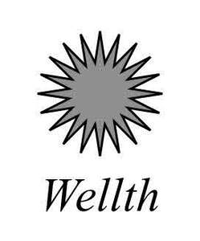

Trade Mark Journal No.2025/043 24 October 2025
UK00004247992 12 August 2025 (9,16,25,35,41,44)
Mark 1

Mark 2

Mark 3

Mark 4

- Class 9
- Computer software, including software downloadable from the internet; Recorded media and apparatus and instruments for recording, transmitting, reproducing or processing sound, images or data (including video recordings, audio recordings, multi-media recordings, video tapes, audio tapes, magnetic discs, cassettes, compact discs, DVDs, laser discs, computer discs, film, digital discs and tapes, other data recording, storage and/or reproduction devices) relating to health, wellness, wellbeing, fitness, exercise, physical training, conditioning and rehabilitation, weight training, kinesiology, anatomy and physiology, diet, food and beverage, cooking and food/beverage preparation, nutrition, weight management, stress management, personal development and lifestyle improvement, applied kinesiology and related complementary therapies; Downloadable software, content, electronic publications and other media/ material (including e-books, audiobooks, digital publications, audio files, videos, multimedia files, journals, guides, information sheets and mobile phone and other applications) relating to health, wellness, wellbeing, fitness, exercise, physical training and conditioning and rehabilitation, weight training, kinesiology, anatomy and physiology, diet, food and beverage, cooking and food/beverage preparation, nutrition, weight management, stress management, personal development and lifestyle improvement, applied kinesiology and related complementary therapies.
- Class 16
- Paper and cardboard for wrapping and packaging; Printed matter; books, magazines, newsletters, catalogues, postcards, diaries, journals, posters, pamphlets, brochures, notebooks, notepads, workbooks, educational charts, recipe cards, printed guides, vouchers, greeting cards, stickers, tickets and calendars; Printed materials relating to health, wellness, wellbeing, fitness, exercise, physical training, conditioning and rehabilitation, weight training, kinesiology, anatomy and physiology, diet, food and beverage, cooking and food/beverage preparation, nutrition, weight management, stress management, personal development and lifestyle improvement, applied kinesiology and related complementary therapies; Bookbinding material; photographs; stationery; office requisites (except furniture), including pens, pencils, and other writing implements; Instructional and teaching material (except apparatus); Plastic packaging and carrier bags.
- Class 25
- Clothing; footwear; headwear; sportswear.
- Class 35
- Promotion and marketing of services and products relating to health, wellness, wellbeing, fitness, exercise, physical training, conditioning and rehabilitation, weight training, kinesiology, anatomy and physiology, diet, food and beverage, cooking and food/ beverage preparation, nutrition, weight management, stress management, personal development and lifestyle improvement, applied kinesiology and related complementary therapies; Online and offline retail services connected with the promotion and marketing of services and products relating to health, wellness, wellbeing, fitness, exercise, physical training, conditioning and rehabilitation, weight training, kinesiology, anatomy and physiology, diet, food and beverage, cooking and food/beverage preparation, nutrition, weight management, stress management, personal development and lifestyle improvement, applied kinesiology and related complementary therapies ; On line retail services connected with the sale of books, products and downloadable content relating to health, wellness, wellbeing, fitness, exercise, physical training, conditioning and rehabilitation, weight training, kinesiology, anatomy and physiology, diet, food and beverage, cooking and food/beverage preparation, nutrition, weight management, stress management, personal development and lifestyle improvement, applied kinesiology and related complementary therapies; Promotion and marketing of workshops, courses, seminars, demonstrations, retreats, training and coaching programs and events in the fields of health, wellness, wellbeing, fitness, exercise, physical training, conditioning and rehabilitation, weight training, kinesiology, anatomy and physiology, diet, food and beverage, cooking and food/beverage preparation, nutrition, weight management, stress management, personal development and lifestyle improvement, applied kinesiology and related complementary therapies.
- Class 41
- Educational and publishing services in relation to health, wellness, wellbeing, fitness, exercise, physical training, conditioning and rehabilitation, weight training, kinesiology, anatomy and physiology, diet, food and beverage, cooking and food/beverage preparation, nutrition, weight management, stress management, personal development and lifestyle improvement, applied kinesiology and related complementary therapies; Writing, editing, publishing and production of books, blogs and online content and digital materials in relation to health, wellness, wellbeing, fitness, exercise, physical training, conditioning and rehabilitation, weight training, kinesiology, anatomy and physiology, diet, food and beverage, cooking and food/beverage preparation, nutrition, weight management, stress management, personal development and lifestyle improvement, applied kinesiology and related complementary therapies; Education and training services in relation to health, wellness, wellbeing, fitness, exercise, physical training, conditioning and rehabilitation, weight training, kinesiology, anatomy and physiology, diet, food and beverage, cooking and food/beverage preparation, nutrition, weight management, stress management, personal development and lifestyle improvement, applied kinesiology and related complementary therapies; Provision of education, training, coaching, advice, instruction, consultancy and information in relation to health, wellness, wellbeing, fitness, exercise, physical training, conditioning and rehabilitation, weight training, kinesiology, anatomy and physiology, diet, food and beverage, cooking and food/beverage preparation, nutrition, weight management, stress management, personal development and lifestyle improvement, applied kinesiology and related complementary therapies; Provision of workshops, courses, seminars, demonstrations, retreats, training and coaching programs and events in the fields of health, wellness, wellbeing, fitness, exercise, physical training, conditioning and rehabilitation, weight training, kinesiology, anatomy and physiology, diet, food and beverage, cooking and food/beverage preparation, nutrition, weight management, stress management, personal development and lifestyle improvement, applied kinesiology and related complementary therapies; Production and distribution of educational films, videos, podcasts and other digital and online media in relation to health, wellness, wellbeing, fitness, exercise, physical training, conditioning and rehabilitation, weight training, kinesiology, anatomy and physiology, diet, food and beverage, cooking and food/beverage preparation, nutrition, weight management, stress management, personal development and lifestyle improvement, applied kinesiology and related complementary therapies; Provision of non-downloadable electronic publications and educational resources and information in relation to health, wellness, wellbeing, fitness, exercise, physical training, conditioning and rehabilitation, weight training, kinesiology, anatomy and physiology, diet, food and beverage, cooking and food/beverage preparation, nutrition, weight management, stress management, personal development and lifestyle improvement, applied kinesiology and related complementary therapies; Entertainment, sporting, and cultural activities in relation to health, wellness, wellbeing, fitness, exercise, physical training, conditioning and rehabilitation, weight training, kinesiology, anatomy and physiology, diet, food and beverage, cooking and food/ beverage preparation, nutrition, weight management, stress management, personal development and lifestyle improvement, applied kinesiology and related complementary therapies; Provision and operation of a website with information and resources relating to health, wellness, wellbeing, fitness, exercise, physical training, conditioning and rehabilitation, weight training, kinesiology, anatomy and physiology, diet, food and beverage, cooking and food/beverage preparation, nutrition, weight management, stress management, personal development and lifestyle improvement, applied kinesiology and related complementary therapies; Provision and operation of premises or facilities for carrying out any of the services or activities described above. .
- Class 44
- Medical services; Hygienic and beauty care for human beings; Health and wellness services; Holistic therapy and complementary and alternative medicine; Advisory, consultancy, coaching, training, instructional, therapy and information services relating to health, wellness, wellbeing, fitness, exercise, physical training, conditioning and rehabilitation, weight training, kinesiology, anatomy and physiology, diet, food and beverage, cooking and food/beverage preparation, nutrition, weight management, stress management, personal development and lifestyle improvement, applied kinesiology and related complementary therapies; Therapeutic treatments, consultations and services using applied kinesiology, muscle testing, therapy localisation, bodywork, manual therapy, acupressure, energy medicine and healing, bioenergetics, traditional Chinese medicine, meridian therapy, aromatherapy, holistic and therapeutic massage, therapeutic touch, myofascial therapy, reflexology, hair analysis, structural manipulation, alignment and integration, and dietary, nutritional and supplement advice; Provision of programmes, plans and guidance relating to health, wellness, wellbeing, fitness, exercise, physical training, conditioning and rehabilitation, weight training, kinesiology, anatomy and physiology, diet, food and beverage, cooking and food/ beverage preparation, nutrition, weight management, stress management, personal development and lifestyle improvement, applied kinesiology and related complementary therapies; Provision and operation of premises or facilities for carrying out any of the services or activities described above. .
Anne-Maree Fitzsimons
Representative: Josh-IP.Law